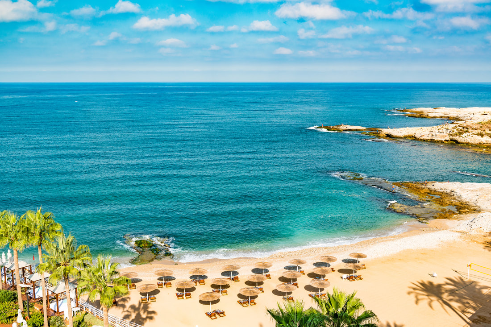
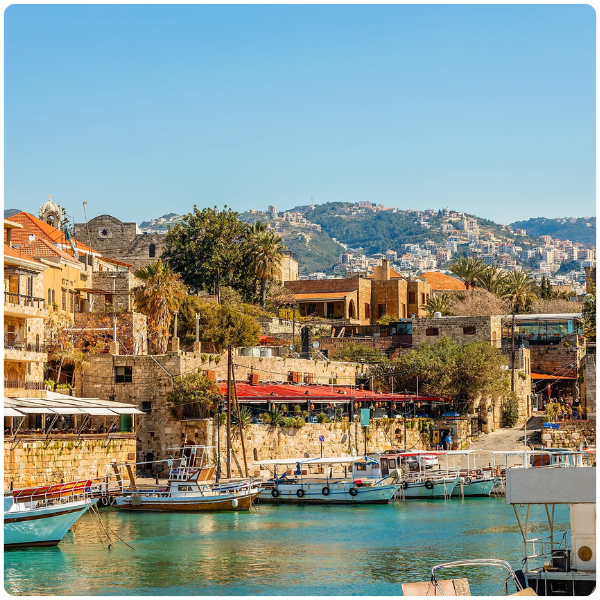
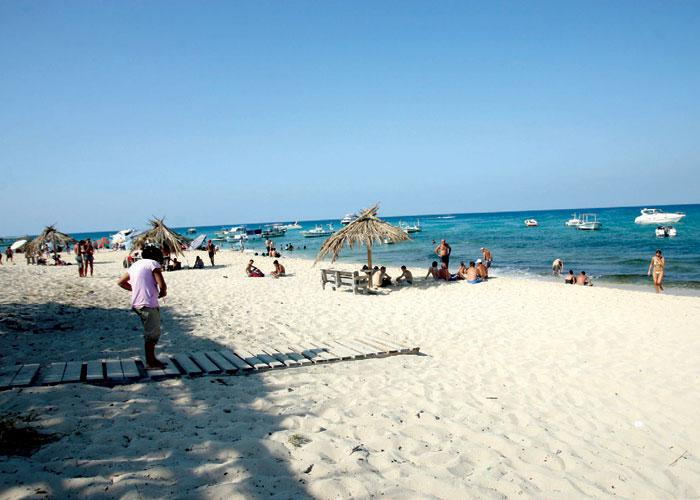
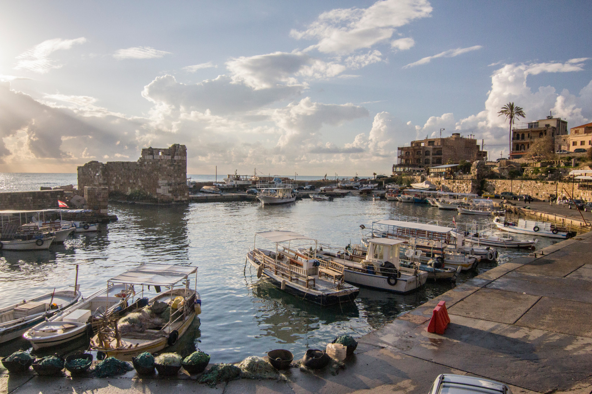
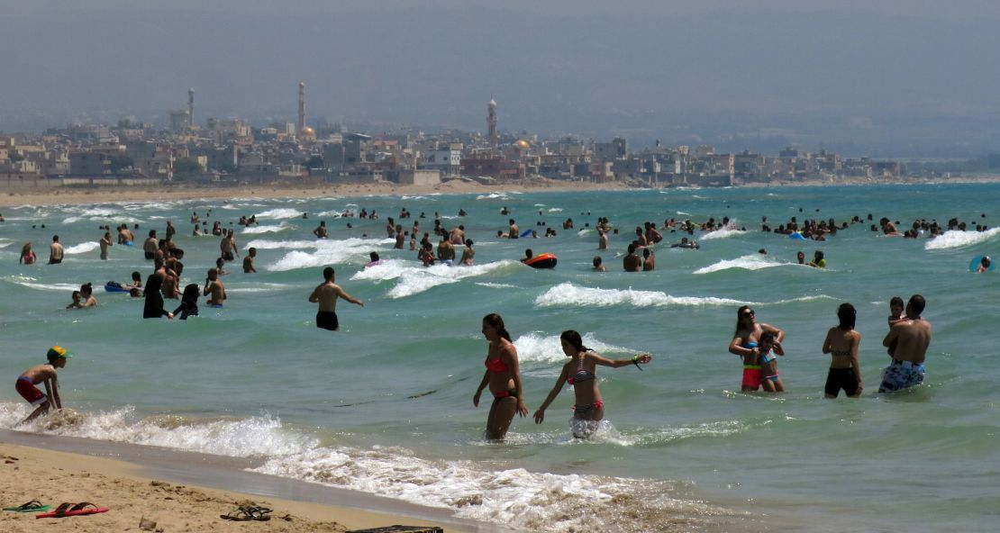

Ministry of Tourism Lebanon
DISCOVER LEBANON
Lebanon's Mediterranean coastline stretches for 225 kilometers, a ribbon of sea that has shaped the country's identity since the Phoenicians first launched their ships into it three thousand years ago. Today it offers everything from lively beach clubs to untouched coves, from ancient port cities to quiet fishing villages.

The Lebanese coast is remarkably varied for its short length. From the quiet rocky coves near Tripoli and Batroun in the north, to the stunning bay of Jounieh ringed by mountains, to the broad sandy beaches of Sidon and Tyre, backed by Roman ruins rather than hotel towers, every stretch has its own character.
Lebanese beach culture is a world of its own. The beach club, combining pool, private beach, restaurant, and bar into one seafront experience, is a true Lebanese institution.
The coast shines brightest in summer (June through September), but remains beautiful year round, with spring and autumn offering a quieter, more peaceful version of the same stunning setting.


A wide semicircular bay framed by mountains rising from the sea. The Corniche runs past restaurants and beach clubs, and the Téléférique cable car above connects the seafront to the Harissa shrine, one of Lebanon's most iconic views.

A laid back coastal town built around an ancient Phoenician sea wall. Rocky beaches, crystal clear water, and a strip of craft breweries, seafood restaurants, and artisan shops give it a character entirely its own.

Widely considered Lebanon's finest beach, a long stretch of white sand backed by dunes, part of which is protected as a nature reserve. Roman ruins flank one side, the open sea the other. One of the most otherworldly beach experiences in the Mediterranean.
Two massive limestone arches rising from the sea off Beirut's western shore, the city's most iconic natural landmark. The Corniche alongside is where all of Beirut comes to walk, fish, and watch the sunset.

Three islands off Tripoli accessible only by boat, offering Lebanon's clearest and most pristine water. As the country's only marine reserve, they're free from development, a wilder, quieter Lebanon entirely.

A small ancient harbor framed by Crusader walls and filled with colorful fishing boats, lined with seafood restaurants. One of the oldest continuously operating ports in the world, and in summer, host to the famous Byblos International Festival.
Lebanon's coastline offers a full spectrum of water based and seaside activities, from the adrenaline of water sports to the quiet pleasure of sitting with a coffee on a fishing pier watching the morning light on the sea.
Beach Club Culture
A full day experience combining private beach or pool, loungers, food, and music. Concentrated around Jounieh and north of Beirut, ranging from family resorts to high energy venues.
Diving & Snorkeling
Clear waters around the Palm Islands and Tyre, where Roman columns and ancient anchors lie just meters below the surface, offer excellent diving. Several centers operate along the coast for all experience levels.
Kayaking & Paddleboarding
The calm coves around Batroun, Jounieh, and Byblos are ideal for sea kayaking and paddleboarding. Several operators offer rentals and guided coastal tours revealing sea caves and hidden beaches.
Fishing & Seafood Culture
Traditional fishing is still practiced all along the coast. Many restaurants serve fish caught that morning, simply grilled with lemon and olive oil, and watching the boats return at dawn is one of the coast's most genuine experiences.
Boat Trips & Island Excursions
Private charters and group trips are available from most coastal towns in summer. Day trips to the Palm Islands from Tripoli are among the most popular excursions in the north.
Corniche Walking & Cycling
The seafront promenades of Beirut, Jounieh, Sidon, and Tyre are among the finest coastal walks in the eastern Mediterranean. Beirut's Corniche in particular is the city's most beloved public space, shared by everyone, at every hour.

Coastal and beach tourism drives the majority of Lebanon's summer visitor numbers. The months of June through September see the highest concentration of both domestic and international tourists, the majority of whom are drawn by the combination of Mediterranean beaches, seafront dining, and the unique energy of Lebanese coastal social life. The economic impact of this season on coastal communities, hospitality businesses, and the wider economy is enormous.
Every summer, tens of thousands of overseas Lebanese return to the country, and the coast is invariably central to their visit. The beach, the Corniche, the seafront restaurant, the old port, these are the spaces of Lebanese summer nostalgia, the landscapes that diaspora Lebanese carry in their memories across the world and return to year after year. Coastal tourism is inseparable from the emotional economy of Lebanese return migration.
Unlike many Mediterranean beach destinations, Lebanon's coast is not only about sun and sea. It is layered with history that gives visitors something to do and discover beyond the beach. The Phoenician sea wall at Batroun, the Roman ruins at Tyre, the medieval Sea Castle at Sidon, and the ancient harbor at Byblos mean that beach tourism and heritage tourism are inseparable along the Lebanese coast, making it a far richer and more rewarding destination than a purely recreational beach would be.
Coastal tourism supports an enormous number of livelihoods, from the beach club staff and hotel workers of Jounieh to the fishermen of Byblos and the restaurant owners of Tyre. In cities and towns where the formal economy provides limited opportunities, the summer tourism season on the coast is often the primary source of income for entire communities. Protecting and developing the coast responsibly is a direct investment in these livelihoods.
Lebanon's coastline faces serious environmental pressure, from unregulated construction, marine pollution, and the loss of natural beaches to development. Responsible coastal tourism, which supports the Tyre Coast Nature Reserve, the Palm Islands Marine Reserve, and the natural beaches that remain, creates the economic and political case for protecting what is left. Every visitor who chooses a natural beach over a concrete one is voting for a different kind of coast.
The sea is not incidental to Lebanese identity. It is foundational. Lebanon is a Mediterranean country in the deepest sense, and the coast is where that identity is most visibly and viscerally expressed. Coastal tourism that allows visitors to share in that identity, eating on a terrace above an ancient port, swimming in the same sea that Phoenician traders crossed, watching the sun set over the water from a Beirut Corniche bench, is not simply leisure. It is an encounter with what Lebanon fundamentally is.
©2026 All Rights Reserved - Ministry of Tourism Lebanon